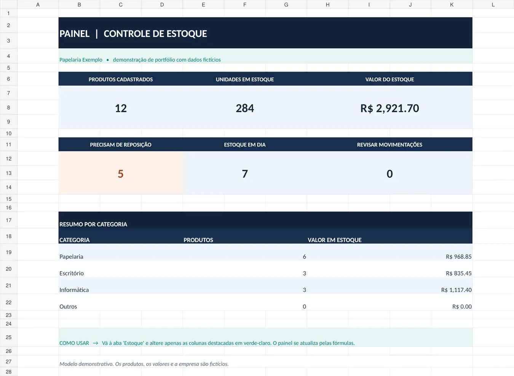
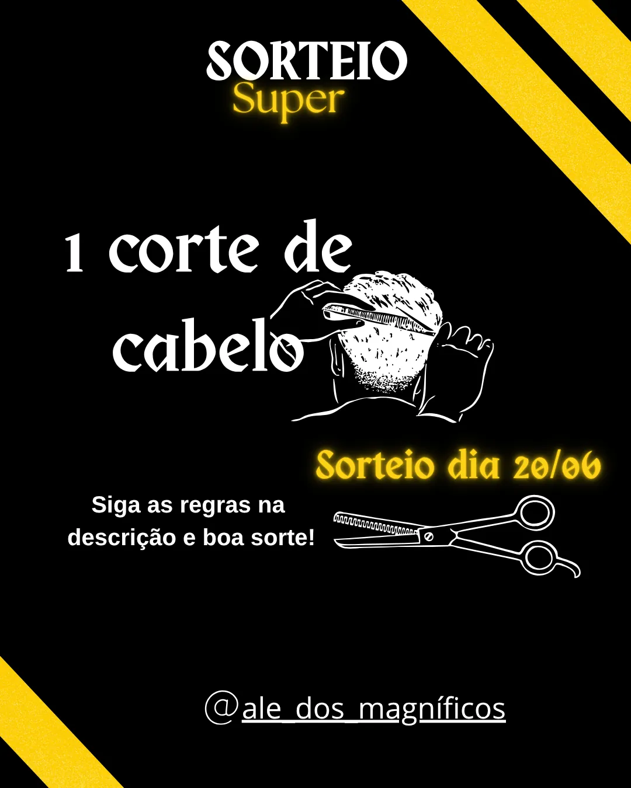
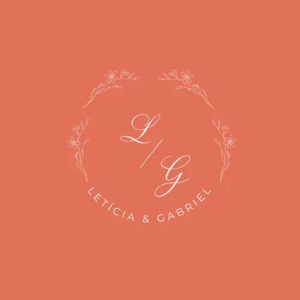
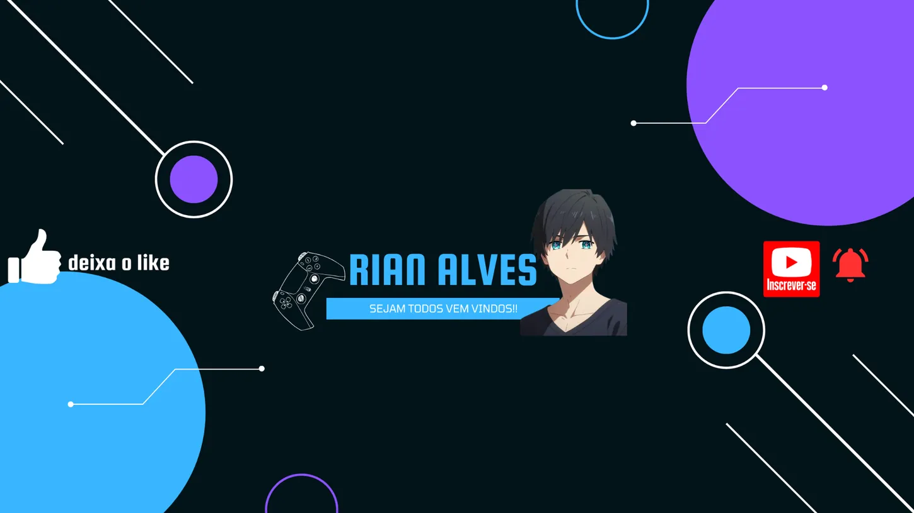
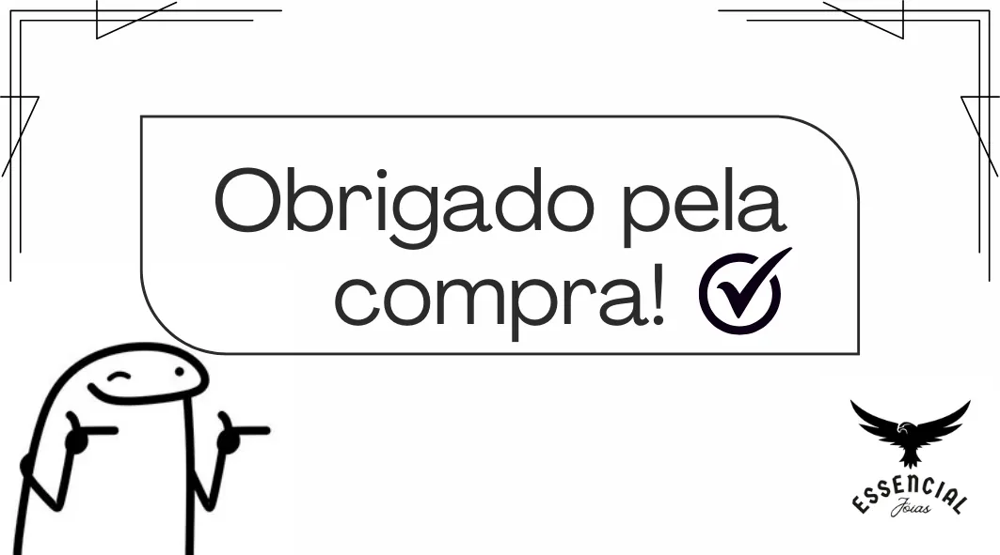
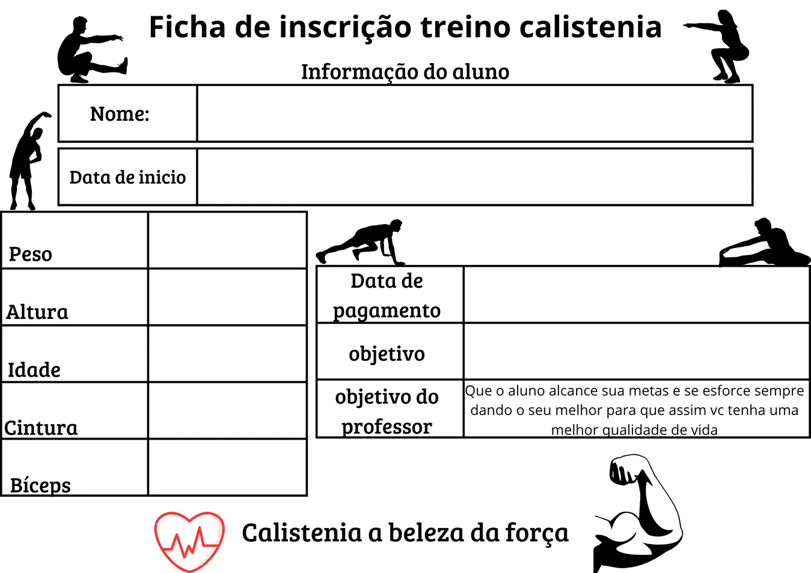

Controle de estoque
Planilha com indicadores, fórmulas de estoque, classificação de produtos e alertas de reposição. Projeto desenvolvido para demonstrar organização de dados.
Sou Rian Alves, estudante de Análise e Desenvolvimento de Sistemas, com formação complementar em Design Gráfico. Reúno projetos de design, organização de documentos e dados, com atenção à clareza e aos detalhes.
01 / TRABALHOS SELECIONADOS
Uma seleção de artes originais, materiais digitais e um projeto demonstrativo de planilha. Cada trabalho mostra uma habilidade que venho desenvolvendo.

Planilha com indicadores, fórmulas de estoque, classificação de produtos e alertas de reposição. Projeto desenvolvido para demonstrar organização de dados.

Arte promocional para redes sociais, com contraste, tipografia expressiva e destaque para a data do sorteio.

Identidade visual delicada com iniciais, elementos florais e composição para materiais de casamento.

Arte digital para canal de jogos, combinando elementos geométricos, identidade gamer e chamadas visuais.

Peça simples para acompanhar pedidos e aproximar uma marca de seus clientes.

Modelo de inscrição com campos organizados para informações do aluno, medidas e objetivos do treino.
ⓘ Os exemplos incluem artes e um projeto demonstrativo com dados fictícios. A apresentação não representa avaliações ou contratos de clientes.
02 / O QUE POSSO DESENVOLVER
Serviços digitais de escopo claro, desenvolvidos de acordo com cada necessidade e com compromisso de revisão.
Posts, banners e materiais visuais com organização das informações e atenção à identidade visual.
CANVA / DESIGNFormatação de tabelas, controles simples, cadastro e organização de dados para uso cotidiano.
EXCEL / DADOSDigitação, formatação de documentos e preparação de apresentações claras e bem estruturadas.
WORD / PDF03 / UM POUCO SOBRE MIM
Sou estudante de Análise e Desenvolvimento de Sistemas pela Estácio. Também estudei Informática e Design Gráfico na Microlins e gosto de transformar ideias em projetos concretos.
Meu portfólio reúne trabalhos visuais, experiências de estudo e projetos demonstrativos. Estou desenvolvendo minha atuação como freelancer, com foco em comunicação clara, aprendizado contínuo e entregas cuidadosas.
04 / VAMOS CONVERSAR?
Veja meus projetos no GitHub ou conheça meu perfil de freelancer. Avalio demandas conforme o escopo, o prazo e minhas habilidades.